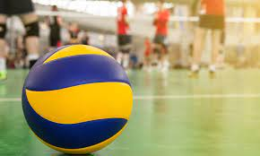
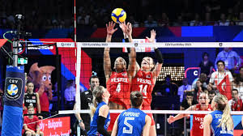

O vôlei foi criado em 9 de fevereiro de 1895 por William George Morgan nos Estados Unidos. O objetivo de Morgan, que trabalhava na "Associação Cristã de Moços" (ACM), era criar um esporte de equipes sem contato físico entre os adversários, de modo a minimizar os riscos de lesões.
 O vôlei, também chamado de volley ou voleibol, é um esporte de origem norte-americana do século XIX. É um esporte de popularidade significativa em grande parte do mundo, e está presente em muitos torneios e eventos esportivos de âmbito internacionais, tais como os Jogos Olímpicos e os Jogos Panamericanos. Pode ser praticado tanto em quadras abertas quanto em quadras fechadas, bem como é praticado quase que igualmente tanto por homens quanto mulheres. A quadra de vôlei é atravessada por uma rede, que a divide em dois campos. Cada campo só pode ser ocupado pela sua respectiva equipe. O objeto usado para a prática de vôlei é uma bola e o objetivo principal do jogo consiste na marcação de pontos ao mandar a bola para o campo adversário e fazer com que ela toque o chão.
Saque: É o movimento que dá início à partida. Para fazê-lo, um jogador deve se posicionar atrás da linha de fundo de seu campo e deve fazê-la atravessar a rede. Caso os jogadores não consigam receber a bola e ela toque o chão, é marcado ponto e a equipe que sacou no primeiro momento tem o direito de saque novamente.
Passe: É o movimento comum de recepção da bola. Pode ser feito em qualquer lugar do campo. Uma das principais formas de passe é a manchete. Nela, o jogador une as mãos e aplica uma pequena força quando a bola chega até ele. O objetivo principal desse fundamento é, além de evitar que a bola toque o chão, entregar a bola em boas condições para o levantador.
Levantamento: É normalmente o segundo contato que um time tem com a bola. Após ser recebida com um passe, um jogador a entrega para outro, sendo esse denominado, naquele omento, levantador. Com as pontas dos dedos, ele empurra a bola para cima. O objetivo principal desse fundamento é manter a bola em uma altura suficiente para que o atacante mande-a para o campo adversário com chances de marcar um ponto.
Ataque: É o último contato do time com a bola antes de mandá-la para o campo adversário. Para fazê-lo, é recomendável que o jogar esteja o mais próximo possível da rede, dê um salto e projete seu corpo para frente, para que seu peso possa ser “transferido” para a bola. O objetivo desse fundamento é mandar a bola para o campo adversário em uma tentativa de que ela não consiga ser recebida pelo outro time e toque o chão.
Bloqueio: É uma possível forma de defesa, assim como o passe, após um ataque. Nela, um ou mais jogadores saltam ao mesmo tempo que o atacante do time adversário e tentam com as palmas das mãos rebater a bola para que ela volte ao campo adversário.